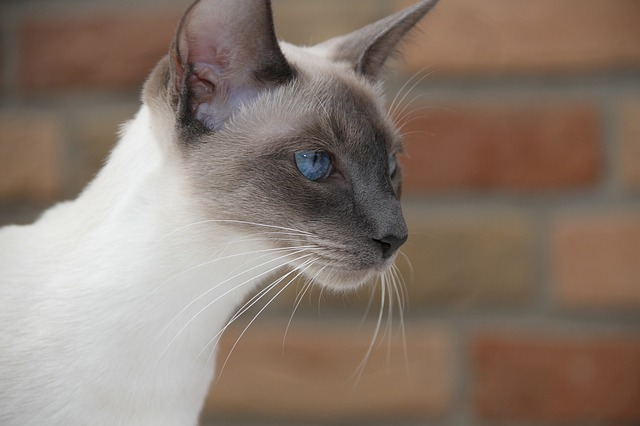
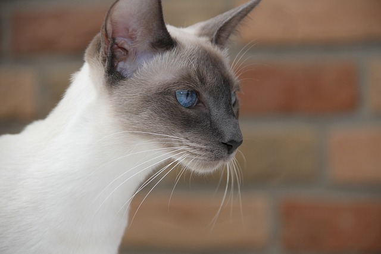
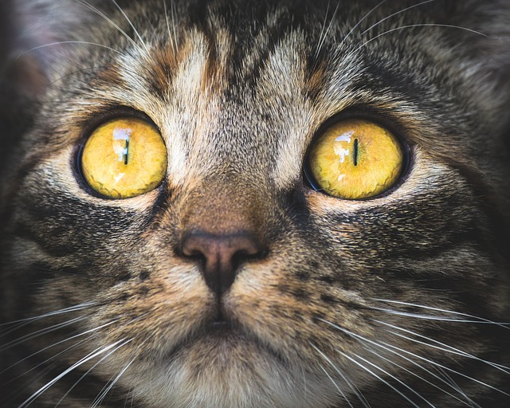
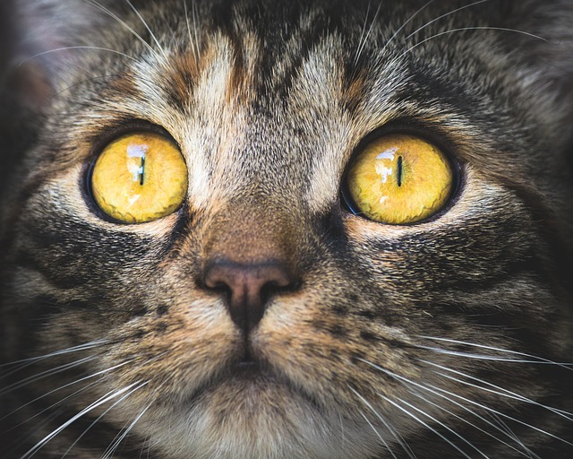

Welcome to my website dedicated to cats. I hope you enjoy your stay.
Cat facts
Cats are small, typically furry animals that can be pets. The scientific name for the domestic cat is Felis silvestris catus. They are often called house cats. Cats are similar in anatomy to the other felids, with a strong flexible body, quick reflexes, sharp teeth and retractable claws adapted to killing small prey. Cat senses fit a crepuscular and predatory ecological niche. Cats can hear sounds too faint or too high in frequency for human ears, such as those made by mice and other small animals.
Breeds
Popular Breeds
Here is a list of popular cat breeds. These are my favourites.
Cat Photos

 

 
